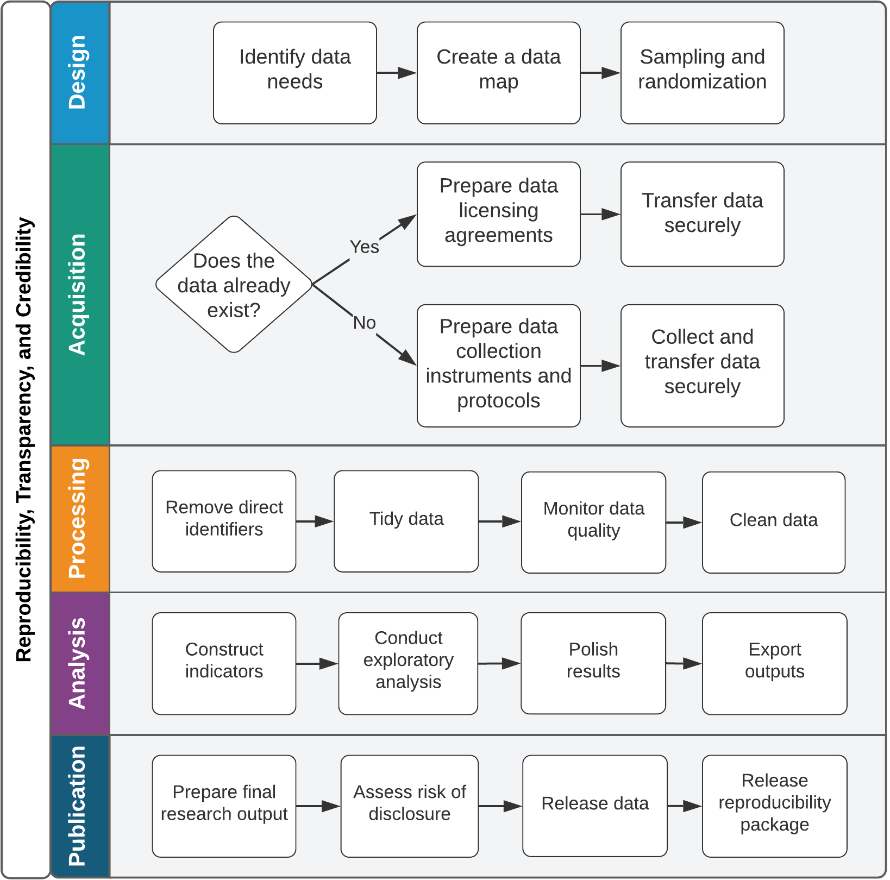

<div id="left"> <img src="img/DIL_logo_safespace_RGBFull Color.svg" alt="DIL logo" width="400"> </div> ## Reproducible data work: an overview March 20, 2024
## Tasks in a data project 1. Designing an empirical strategy 2. Gathering data 3. Validating data quality 4. Preparing data for analysis 5. Exploring data 6. Presenting descriptive statistics 7. Refining analysis 8. Presenting analysis results Note: - Here is a simplified list of tasks involved in data work - Some of them need to happen in order but in practice we go back to steps 1-4 after each of them - Some of you have done data work outside of the classrom. How much time would you say that steps 1-3 take vs steps 5-7 - Steps 1 to 4 set the stage for you to succeed in steps 5 to 7. That's because this is how you get to know the data, and it gives you insight that is invaluable at the analysis stage - They are also the most time consuming when it comes to code implementation. analysis usually has off-the-shelf functions, but data processing is unique to each data set - If you have to take one thing away from what I am saying today, it is this: don't rush to regressions. --- ## Research data work: a model  Source: [Development Research in Practice](https://worldbank.github.io/dime-data-handbook/) Note: - Processing: - Turn the raw data into data that you can actually use to create your final data set. Objective/research question agnostic - Data processing is the most time-consuming stage of research, and you will be tempted to skip steps - Taking time to prepare your data will save you more over the course of the project. It will also save you some embarassment - Getting your hands dirty on the data will also make you very knowlegeadble about it. This can be a very significant contribution to the project - Analysis: - Adapting clean data to our research needs - transforming the data - project-specific
## Planning data work Note: - Why? - "Here's some data. Show me the results of this model" - Chaos ensues but you have something at the end that you kind of believe - We are acting as consultants, we want to present this is a professional manner and set expectations with our clients of what they can expect at which point - "These are all the data we have, here's where we want to get, here's the steps to get there"
## Project design - What is the research question? - What is the method used? - What are the main outcomes? - What are the main controls? --- ## Data needs - What data do we need to analyze? - How can we measure these indicators? - What are the units of observations? - What are the data sources? - How does this information relate to one another? - How do we get from the raw data to the analysis data? Note: How is the research design translated into data? --- ## Data map - Documents the plan for data work - Creates a shared understanding of what steps need to happen before analysis can begin Note: This will not be relevant for all of your projects. But it becomes more and more important as the more complex a project's database is. So I wanted to quickly mention it and link to more resources. --- ## Data map: components - [**Data linkage table:**](https://dimewiki.worldbank.org/Data_Linkage_Table) a list of all the raw data tables in the project, their level of observation, and how they can be linked to other data tables - [**Data flow chart:**](https://dimewiki.worldbank.org/Data_Flow_Charts) a plan for how to create each analysis data table from the raw data
## Setting up a collaborative workflow Note: - Raise your hand if this something like this ever happened to you: - you wrote some important notes on a google doc and then could never find it again - you have five different scripts that needed to be run in a certain order, but it's been more than 2 months since you wrote them and now you don't remember which order that is - you have three different versions of a data set and are not sure which of them should be used in your analysis - plan ahead. we only have 10 weeks to complete this project and changes can be costly - many cooks in one kitchen. everyone should know where to find things and how to communicate what they are doing
## Setting up a collaborative workflow - What software is best suited for the project? - How to organize files? - How to work together? - Write everything down! Note: Use these questions as a guide as you start to interact with the project materials and set up your workflow for collaboration --- ## What software is best suited for the project? <ul> <li> Aim to use a single statistical software for the entire project</li> <div class="fragment fade-in"> <ul> <li>Which software are most team members comfortable using?</li> <li>Which software can implement all the analysis and data processing steps that the project requires?</li> </ul> </div> <div class="fragment fade-in"> <li> What software will you use for your final output? </li> </div> <div class="fragment fade-in"> <li> How will you integrate these two software? </li> </div> </ul> --- ## How to organize files? <ul> <li>One shared directory that everyone can access</li> <div class="fragment fade-in"> <li>How will this directory be organized? </li> <ul> <li>Folder structure</li> <li>Naming conventions</li> <li>README file</li> </ul> </div> <div class="fragment fade-in"> <li>How to handle sensitive data?</li> </div> <div class="fragment fade-in"> <li>How to make sure the original data will not be erased or modified in any way?</li> </div> </ul> --- ## How to work together? <ul> <li>Everyone in the group should be able to run everyone else's code</li> <div class="fragment fade-in"> <ul> <li>One script to run them all</li> <li>Standardize computing environments</li> </ul> </div> <div class="fragment fade-in"> <li>Everyone in the group should be able to understand everyone else's code</li> <ul> <li>Pick a style guide</li> <li>Make sure your code is well-commented and self-explanatory</li> </ul> </div> <div class="fragment fade-in"> <li>Create a quality assurance protocol</li> <ul> <li>Agree on a version control system for code, data, and outputs</li> <li>Decide on a workflow for double-coding and/or code review</li> </ul> </div> </ul> --- ## Write everything down! <ul> <li>When you deliver your work to the client, they should be able to understand it and to continue working on it with miminal input from you</li> <div class="fragment fade-in"> <li>How will the project be documented?</li> <ul> <li>Meeting notes</li> <li>Code and data decisions</li> <li>Instructions for new users</li> </ul> </div> </ul>
Thank you!